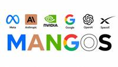

Last Thursday, Wired reported that Meta had quietly embedded an unreleased facial recognition system called NameTag into software installed on millions of phones. In a follow-up report, Wired says the tech giant has now removed the face-recognition-related code, while saying "no final decision" has been made about whether the feature will launch. From the report: On Thursday, WIRED reported that Meta had quietly integrated substantial portions of the NameTag system into the Meta AI app. Though never publicly enabled, the feature was designed to convert faces captured by the glasses into unique biometric signatures, commonly known as faceprints, and compare them against a database of faceprints stored on the user's device. WIRED also found that faces the system failed to recognize were cropped, indexed, and stored locally for future processing.
NameTag first surfaced in February, when The New York Times, citing internal Meta documents, reported that the company was developing face recognition for its smart glasses and weighing a launch as soon as this year. One memo reportedly described releasing it during a "dynamic political environment," when privacy and civil liberties advocates would be distracted. Last week, WIRED reported that much of NameTag's machinery was already built into the Meta AI app, downloaded by millions of users, as early as January, even as Meta publicly said it had made no final decision about face recognition. After WIRED's report, Stone dismissed the findings, writing that the company couldn't answer questions about how the system would work because "the feature does not exist." Andrew Bosworth, Meta's chief technology officer, called the reporting "incredibly misleading" and "absolutely dishonest."
[...] The newly released version of Meta AI removes nearly all traces of the feature Meta said did not yet exist. Gone is the face-recognition software itself, along with the code that ran the NameTag recognition process and the "Person recognized" alert the app would have shown if someone were identified. The update also strips out a folder where the app would have stored the cropped images and biometric signatures of faces it captured but could not identify. [...] A few fragments of the NameTag system remain in the version of latest Meta AI, including an internal debug menu label and a dormant link meant to open a recognized person's profile. The leftover code points to parts of the system that are no longer there.
Read more of this story at Slashdot.
Microsoft executive Matt Booty says future Xbox exclusivity will be decided "case-by-case," with Gears of War: E-Day and Clockwork Revolution remaining Xbox console exclusives while major multiplayer, live-service, and previously promised PlayStation releases stay multiplatform. But IGN's Tom Phillips says Microsoft's announcement still leaves numerous questions unanswered, like "why just Gears and Clockwork Revolution?" and "how will this policy be enforced in future?" From the report: Last night's Xbox Showcase featured the return of games specifically earmarked as exclusives for Xbox consoles (though, of course, they'll still also be coming to PC). But why just Gears and Clockwork Revolution? And how will this policy be enforced in future? Microsoft's announcement left numerous questions unanswered. "We want a reason for people to get on board with Xbox, we want them to have a reason to buy an Xbox, we want them to have a reason to be an Xbox fan," Booty said. "At the same time, we want to reward all our players that have been with us for a long time -- we know that exclusives are important, and that's why we've got Gears coming in 2026 and Clockwork [Revolution] coming in 2027."
"We also want to be clear that our big multiplayer games and live-service games are going to continue to be multiplatform," he continued. "If we've promised something to players already, we're going to honor that promise. And then -- I think Asha said it -- we're going to make the right decision and not the fast decision. "We're going to keep thinking about this going forward," Booty continued, "and, I think you guys know already, our principle is when we announce the date, we announce the platforms. So, it's going to be case-by-case, but we're going to be clear, that when it's got a date, it's got a platform and you'll know what the choice is going to be."
Beyond those games already confirmed for PlayStation (such as the upcoming Halo: Campaign Evolved, and the PS5 version of Forza Horizon 6 due later this year), last night saw Microsoft make the call that other upcoming titles would still be coming to PS5 as well. While it had been assumed that State of Decay 3 would get a PS5 version, yesterday saw it made official. Hellblade threequel Senua was unveiled, and is getting a PS5 version. And, unsurprisingly, Spyro: A Realm Beyond is coming to Xbox, PS5 and Nintendo Switch 2.
Read more of this story at Slashdot.
An anonymous reader quotes a report from AppleInsider: Apple has unveiled its next Mac operating system, macOS Golden Gate, with Apple promising better performance, the improved Siri, and more. [...] On the surface, macOS Golden Gate is not as significant an upgrade as macOS Big Sur, or even macOS Tahoe with its Liquid Glass redesign. But under the surface, it is much more significant than it seems. Apple has chosen this release to draw a line in the sand. For the first time, the new macOS Golden Gate will not support Macs that have Intel processors. [...] Nonetheless, as of when this is released to the public in September or October, no Intel Macs will ever be supported again. One of the most notable design tweaks in this new release is a refinement of macOS toolbars and sidebars: toolbars are now more distinct, sidebars can stretch all the way to the window edge, and sidebar icons have regained color. Apple is also tightening window corner radii to address complaints about resizing behavior.
Read more of this story at Slashdot.
Jeff Bezos is backing Flourish, a new "neuro AI" startup with $500 million in funding and a reported $2.5 billion valuation, that aims to reinvent AI by studying the brain's architecture and building systems that learn continuously while using far less power than today's large language models. The company's long-term bet is that neuroscientists and AI researchers working together can uncover the brain's "core algorithm" and eventually create brain-inspired AI that runs on a tiny fraction of current compute. Wired reports: Rob Williams knows how to pitch Jeff Bezos: You write a press release as if your product has already been built. Bezos reads it and gives a thumbs up or down. Williams went through this process a lot as an executive on Amazon's "S-team," in charge of software products such as Alexa, until his departure last fall. But the pitch he made a few weeks later -- in December 2025 -- was different. Now he was collaborating with Thomas Reardon, a neuroscientist and repeat startup founder, and approaching Bezos as a funder, not a boss. Here's what Bezos, sitting on his yacht somewhere, read while Williams anxiously watched on Zoom: "Flourish is a neuro AI company that is solving the two most difficult problems facing AI today: power efficiency and continuous learning. We are building Cortex AI, the first synthetic intelligence system designed to match the computational capacity, learning efficiency, and power budget of the human brain."
A month later, I'm lunching with Reardon and Williams in the Flatiron neighborhood in New York City. Reardon gets right to the point. AI has dug itself into a hole, he says. Though increasingly powerful, large language models are greedy consumers of computer power and data. Though the inspiration for LLMs was rooted in biology, current frontier models have little in common with the human brain. A person uses about 20 watts of energy to process information; a single chip in an AI training cluster uses more than 30 times that amount. The hyperscalers require thousands of chips and gigawatts of energy, enough to power small cities. And those models need to suck up virtually all of what humans have written. Each new model requires more, more, more. For all of that, the models don't learn. Once you train them, they're stuck. The goal, Reardon tells me, is to build "a synthetic artificial intelligence brain that runs on 50 watts or less." It should adapt to its conditions, be as nimble as a human mind, and burn a tiny fraction of an LLM's compute power and energy. The proof of concept is thriving inside our skulls. "There's something fundamentally wrong with saying, "I need to basically read every book ever written 20 times over in order to learn English,'" Reardon says. "A human baby does it with a couple hundred thousand utterances."
Reardon and Williams haven't figured out yet how to build systems that match the magic of a human brain. What they have is a belief that an expert, well-resourced team -- of AI researchers and neuroscientists working essentially side by side -- can find the answer. The neuroscientists will conduct original wet lab experiments with some of the most advanced lab equipment available, to hunt for usable intel on the brain's architecture. They plan to release the models they're currently developing as near-term products on the path to a full reinvention of AI. The fuzziness of the proposal didn't bother Jeff Bezos. After reading Williams' two-pager, he chipped in $50 million. Other funding came from Lux Capital, Google Ventures, and Catalio, among others. Bezos then almost doubled his initial stake and told Reardon he'd have given more if they'd asked. Now with a war chest of $500 million and a reported valuation of $2.5 billion, Flourish just needs to invent a new way to do AI.
Read more of this story at Slashdot.
Most supply-chain attacks using Ruby's package hosting site "exploit a narrow window," according to a new blog post form Ruby core maintainer Hiroshi Shibata.
So its packaging-managing Bundler tool now offers a filter that blocks new version until it's been public "for at least N days. Releases too new to have been scrutinized are passed over in favor of ones that have aged past the window."
The feature was designed in the open, drawing on how other ecosystems approach the same problem. It is opt-in, and complements rather than replaces existing defenses like mandatory 2FA and trusted publishing... Cooldown is unset by default, so a project without it keeps resolving to the newest versions.... Passing 0 disables cooldown for the run...
Cooldown is most useful as one part of the wider security investment happening on rubygems.org. The registry now validates gem contents at push time and checks logins against Have I Been Pwned so that compromised passwords cannot be reused, work described in Protecting rubygems.org from the outside in. A dedicated team is running AI-assisted vulnerability scanning against the most critical gems, backed by Alpha Omega and Anthropic, and the direction of all of this is tracked on a public roadmap. Trusted publishing and mandatory 2FA already raise the bar for who can push a release in the first place.
Read more of this story at Slashdot.
Researchers say mysterious, seconds-long GPS interference bursts detected across Europe appear to come from Russian EKS early-warning satellites, making this "a rare example of human-made GPS interference coming from space," reports Ars Technica. The signals may be tests of space-based jamming capability, short satellite communications, or something else, but experts say they raise troubling questions about whether GPS disruption could eventually be weaponized on a continental scale. From the report: The discovery came from an investigation detailed in a June 2 preprint paper by Todd Humphreys and his student Zach Clements at The University of Texas at Austin, along with Argyris Krizise at Stanford University in California. By sifting through public data from ground-based stations with global navigation satellite system (GNSS) receivers, they identified a pattern of high-powered interference lasting less than 10 seconds each time but simultaneously detectable by ground stations across Europe from Norway to Spain to Poland, and even reaching as far west as Greenland and Canada.
By analyzing the ground station data from January 2019 to April 2026, the researchers found 75 days with at least one widespread GNSS interference event overlapping with the GPS L1 frequency band centered on 1575.42 megahertz. That represents the main band used for signal transmission by the US-made GPS satellite constellation and GNSS constellations from other countries. Such interference patterns happened mostly on Tuesdays, Wednesdays, and Thursdays during business hours in Europe, Humphreys told the YouTube channel Veritasium. Because such "continental-scale" interference was simultaneously affecting GPS receivers across Europe and beyond, Humphreys and his colleagues calculated that the source had to be at least 1,200 kilometers above the Earth.
[...] In the Veritasium video, Humphreys speculated that the Russians may have been testing the satellites' GPS interference capabilities only briefly on a neighboring frequency adjacent to the typical GPS band. "And then in the eventual future when there is a hot conflict, they go ahead and tune their transmitter down to the GPS band, but it's much more damaging now that it lies right on that band," he said. Incidentally, the raw data also revealed a second interference burst from the Russian satellites in a lower-frequency band used by China's BeiDou navigation system. "I can no longer say this is accidental with confidence," Humphreys told Veritasium. He also described the Russian satellites' quiet demonstration as a "massive escalation in the electronic warfare background conflict that is going on right now." Richard Bowden, division head of assured and resilient PNT at the multinational technology company GMV in Spain, wrote in a LinkedIn comment: "These signals are, without a doubt, intentional and placed on or around GNSS signals, and have the potential to disrupt legitimate use of GNSS services. But from our side at least, we can't be sure they are intentionally malicious or intended as an EW [electronic warfare] weapon."
Read more of this story at Slashdot.
A battery researcher's investigation, backed by more than 20 independent experts, claims Donut Lab's much-hyped "solid-state" battery is actually a conventional lithium-ion cell, with voltage curves and expansion data matching high-nickel NCM chemistry rather than the promised sodium-ion solid-state design. Electrek reports the company raised about $25 million from more than 1,300 mostly small investors on claims of 400 Wh/kg energy density, 100,000-cycle life, and 5-minute charging that now appear unsupported. From the report: The investigation consulted over 20 independent battery experts, including Julian Zanau from the Fraunhofer Research Institute, Dr. Yahim San from Justus-Liebig University, Tom Bicha from Leona, and Dr. Yuo Hesca from Seinajoki University of Applied Sciences. Every single one confirmed the tested cell is lithium-ion. There are two key pieces of evidence. First, the voltage curves from VTT testing match high-nickel lithium-ion cells (NCM chemistry). The cell sits at 3.7-3.8 volts at 50% state of charge -- right where lithium-ion cells operate. Sodium-ion cells don't go significantly past 3.5 volts at 50% SOC.
The second piece of evidence is even more damning: VTT's cell expansion data. When a battery charges, ions squeeze into the anode material, causing it to expand in a predictable pattern. A graphite anode produces a distinctive "kink" in the expansion curve around 50-70% state of charge, caused by how ions reorder themselves in graphite's layered structure. The Donut Lab cell shows exactly that kink.
This is critical because sodium ions are physically too large to fit into graphite layers. The graphite anode signature proves the cell uses lithium ions. The investigation puts it well: "it's like we have a slightly noisy fingerprint and a picture of the suspect's face. And yet again, it's a match." The calculated energy density? About 298 Wh/kg -- what you'd expect from a good lithium-ion cell, not the 400 Wh/kg claimed.
The investigation reveals that the battery technology traces back to CT Coatings, a German company with an "eclectic" array of patents -- including inventions for screen-printed paving slabs, menu folders, and warning triangles. CT Coatings promised Nordic Nano and Donut Lab a screen-printed sodium-ion solid-state battery. What it delivered was a lithium-ion pouch cell.
Read more of this story at Slashdot.
An anonymous reader quotes a report from The Guardian: The world's oceans are under "severe and accelerating" pressure from human activities, with the rate of sea-level rise double that of a decade ago, according to a damning assessment from the United Nations. The "intensifying" stressors, which include pollution and large-scale industrial fishing, are cumulative, said the report, resulting in widespread biodiversity loss and putting ocean systems under "severe strain."
The UN's third World Ocean Assessment, which reflects the work of nearly 600 scientists from 86 countries, looked at the oceans' health from 2021-25. The previous report, that covered up to 2018, found persistent degradation of the marine environment. Five years on, scientists know more about the cumulative impacts of anthropogenic pressures on the ocean, and the latest report shows just how much of the damage has been done in the past few years. The scientists' key findings include:
- Sea levels continue to rise at an increasing rate, from 2mm a year prior to 2015 to 4.3mm a year in 2023.
- 16% of the increase in global ocean heat since 1955 occurred after 2018.
- The greatest relative warming has been observed in the Atlantic Ocean and the southern parts of the Indian and Pacific Oceans.
- Large gaps in knowledge persist -- with only 27% of the ocean floor mapped by 2025, deep-sea ecosystems remain poorly understood. Lukas Meus, Greenpeace's global ocean campaigner, said: "We are calling on governments to create fully protected ocean sanctuaries that will close vast areas of the ocean off from extractive human activities. Governments have promised to protect 30% of the world's ocean by 2030 -- the minimum scientists say we need for the ocean to be able to recover."
Read more of this story at Slashdot.
wiredmikey shares a report from SecurityWeek: Meta-owned communications app WhatsApp says it recently detected and disrupted a spear-phishing attempt linked to spyware company NSO Group. The attack is allegedly in defiance of a court order that bars the spyware maker from targeting WhatsApp. WhatsApp filed a lawsuit against NSO in 2019, after it came to light that a zero-day vulnerability had been exploited to deliver spyware to users. [...] NSO has been seeking to overturn the order blocking it from targeting WhatsApp users, arguing that the company will "suffer irreparable harm."
According to WhatsApp, the spyware maker has violated the permanent injunction. The messaging app reported on Monday that it had recently learned of a social engineering attack that attempted to trick users into clicking on malicious links. WhatsApp has only shared a few domains as an indicator of compromise (IoC), but says it was able to link the attack to NSO, pointing to similarities to previously reported one-click phishing campaigns tied to the spyware company. WhatsApp says it also caught the attackers creating test accounts and groups. Those accounts and groups have been disabled, but further action is also being taken. WhatsApp says it is asking a federal court to hold NSO in contempt for allegedly violating a permanent injunction barring it from targeting WhatsApp and its users. The company also said it is making a "significant contribution" to the Spyware Accountability Initiative, a fund aimed at exposing and stopping spyware abuse.
Read more of this story at Slashdot.
Firefox has merged initial support for Vulkan Video decoding, giving the browser a more cross-platform path for GPU-accelerated video playback beyond Linux's long-running reliance on VA-API. Phoronix reports: Firefox on Linux has long been focused on the Video Acceleration API (VA-API) that isn't universally supported by Linux graphics drivers. This has left to efforts like NVIDIA-VAAPI-Driver to layer VA-API atop NVIDIA NVDEC interfaces to enjoy GPU-accelerated video playback in Firefox. Smaller Arm/embedded graphics drivers also have been largely left out of the game in the VA-API space. But with Vulkan Video we are beginning to see more adoption and in a cross-platform manner.
[...] The Firefox 153 release due out in July will have Vulkan Video decoding support available. The Vulkan Video activity in Firefox Git culminated this week with the work of NVIDIA engineer Tymur Boiko and Red Hat's Martin Stransky. Firefox 153.0 is expected for release on 21 July with this Vulkan Video support assuming no last minute issues.
Read more of this story at Slashdot.
Bending Spoons, the Italian app studio behind acquisitions like Eventbrite, Vimeo, WeTransfer, Evernote, and AOL, has filed to go public in the U.S. after growing into a subscription-heavy app conglomerate with more than 500 million monthly active users. TechCrunch reports: In its filing with the Securities and Exchange Commission, Bending Spoons said it ended the year with $1.31 billion in revenue and has generated $601 million in Q1, a 132% year-on-year jump. The company gets the majority of its revenue from subscriptions, which account for 84% of its business. It generated $27.4 million in profit in Q1 2026. The company raised funding at an $11 billion valuation last year, up from $2.8 billion in 2024. In April, Reuters reported that the company could seek a $20 billion valuation with the IPO.
Read more of this story at Slashdot.
A burglar took a self-driving Waymo taxi to rob a San Francisco yoga studio this past January, reports TechCrunch — "and police have still not caught them."
Even the police officer assigned to the case thought it would be easier to solve, notes The San Francisco Chronicle, since Waymos are outfitted with multiple high-definition cameras and require users to make accounts with their credit card numbers:
It's common for officers to seek video footage of a crime from any of the Waymos, Teslas and other high-tech vehicles that record their surroundings. That information can be crucial for identifying suspects or creating a reliable timeline of events. At times, police will go so far as to obtain search warrants to tow the vehicle "witnesses" to ensure they don't lose valuable video evidence. In the Hot 8 Yoga burglary case, San Francisco police issued a search warrant that forced Waymo to turn over information on the account that ordered the ride and video footage from the white Jaguar that served as the getaway car, police records show.
Faye said that he couldn't discuss certain details of the case, but that the Waymo user's account information didn't lead police to the suspect. In general, he said, it's not unusual for a criminal to order a service with stolen information or a burner phone. The video evidence didn't help much either, Faye said. He said that the company had not retained interior footage of the car by the time the search warrant was filed in April and that it had kept the faces seen outside the car blurred for privacy reasons... Waymo does not publicly disclose how long it retains video footage. The company blurs faces and license plates in the public-facing images it uses in a database designed for research....
Last year in Los Angeles, a person allegedly robbed a grocery store before hopping in a Waymo. Officers were able to chase down the vehicle after the suspect got inside, and the car pulled itself over after police turned on the car's emergency lights, according to Los Angeles-area news outlets.
"Farah Issa, studio manager of Hot 8 Yoga, showed the Chronicle a copy of the surveillance video from her phone, noting how the Waymo dropped off the suspect and waited for him to finish the burglary before taking off again."
Read more of this story at Slashdot.
Reuters reports:
Several large data centers and crypto facilities planning to connect to the Texas power grid ahead of peak summer demand have failed key reliability tests, raising the risk of power outages just as electricity use hits its seasonal high, according to the state grid operator... Unlike traditional industrial customers, which tend to draw electricity steadily and predictably, data centers are engineered to cut their connection to the grid at the first sign of trouble to protect their equipment and keep services running. That makes them an unpredictable and potentially destabilizing force on grids already under pressure from rising demand. Four groups of unnamed large electricity users, including data centers, abruptly disconnected from the Texas grid during a test of how they would handle routine voltage disturbances, the Electric Reliability Council of Texas (ERCOT) said in a report dated May 21.
When large customers abruptly cut their power use, it can knock the grid off balance and trigger wider outages. ERCOT, which manages electricity for most of Texas, said it reviewed about 20 gigawatts of large customers seeking to connect to the system, including eight projects totaling roughly 3.9 gigawatts aiming to start up before July 1. It said it identified four groups of large power users that could each trigger more than 5,000 megawatts of demand tripping under certain fault conditions, based on simulations of transmission system disturbances. Those abrupt drops in demand were equivalent to the electricity consumption of a large city such as Boston.
Read more of this story at Slashdot.
OpenAI has confidentially filed for an IPO, "setting it up for what may be the most highly anticipated market debut in recent history and a massive payday for early investors," reports CNN. The decision follows recent IPO announcements from Anthropic and SpaceX. From the report: OpenAI said it has not decided on timing yet. And because the filing is confidential, it's not yet clear how many shares the company plans to sell or at what price. "It may be a while because there are things we want to do that are likely easier as a private company," it said in a post on its newsroom page. But the company said the filing "gives us the option to go public sooner if that ends up being best."
The transition to a public company will give Wall Street a window into OpenAI's finances as the company pours billions into AI infrastructure and computing resources. Investors dumped tech stocks last week as they questioned whether a recent run-up in those shares had gone too far. OpenAI was last valued at $852 billion after raising $122 billion in March, but it's faced pressure to demonstrate it can generate the cash to match that valuation.
Read more of this story at Slashdot.
At WWDC 2026, Apple announced a new "Siri AI," describing it as a more conversational, personalized, and systemwide assistant that can understand on-screen context and interact with apps while relying on on-device processing or Private Cloud Compute. The relaunch comes two years after Apple's original Apple Intelligence promises stumbled and "never fully materialized," reports The Verge. MacRumors reports: Siri is now embedded directly in the Dynamic Island, accessible by swiping down from it, pressing the side button, or saying "Hey Siri." A revamped voice engine makes the assistant sound more expressive, with micro-adjustable voice settings available during initial setup.
During Apple's keynote demo, presenters showed Siri handling chained, multi-step requests with apparent ease. In one sequence, a presenter asked about a Suki Waterhouse concert, was told tickets require a lottery entry, and asked Siri to set a reminder when the lottery opens, which it did. In another, the assistant identified a photo's landmark, pulled up navigation to that location, and surfaced photos from a recent family trip, adding a specific image to a shared family album on request.
Another demo showcased Siri's ability to synthesize information across apps. A presenter asked about a dessert he had heard about at an event, and Siri located the relevant details from his Messages history. It then compiled the information into a watch-party menu, drafted a message to his contacts with the menu included, and presented send and edit options. In a further demo, a presenter asked about something his son had shared in a message and followed it up by asking Siri to compose an email on the subject.
A new dedicated Siri app lets users scroll back through prior conversations and kick off new ones, with conversation history synced via iCloud so sessions carry seamlessly between devices. The app is also coming to watchOS. On the Mac, Siri is now also integrated into Spotlight and available via right-click context menus on any file or window. On visionOS, Siri AI gains a 3D visualization that users can place anywhere in their space.
Read more of this story at Slashdot.
Ryan Lawler / Axios : Vinyl Equity, an SEC-registered transfer agent that has launched a payments platform earlier this year, raised a $20M Series A led by Jump Capital — Vinyl Equity, which is building a modern transfer agent for public companies, raised $20 million in Series A funding led by Jump Capital, CEO Rob Schoder tells Axios exclusively.
Ben Weiss / Fortune : Decentralized lending protocol Morpho raised $175M led by Paradigm, Ribbit Capital, and a16z Crypto in a token sale valuing Morpho at up to $2B — Paul Frambot has a message for the “suits” at traditional financial institutions. “I think TradFi is going to have to wear shorts,” …
Apple Machine Learning Research : Apple unveils new Apple Foundation Models: two on-device models, including a 20B-parameter multimodal model called AFM 3 Core Advanced, and three cloud models — Our next generation of Apple Intelligence is centered around our users, integrated deeply into our operating systems …
Sergiu Gatlan / BleepingComputer : French government warns that hackers used a hijacked user account to breach Tchap, its encrypted messaging app for civil servants with 300,000+ monthly users — DINUM, the digital affairs directorate of the French government, warned that hackers used a hijacked user account to breach Tchap …
Bloomberg : New York-based Standard Bots, which wants to make AI-powered robotic arms in the US, raised $200M led by General Catalyst and Robostrategy at a $1B valuation — Standard Bots has raised $200 million in a new round of funding to ramp up manufacturing of robotic arms in the US as the country vies …
Inti Landauro / Reuters : The EU says Apple decided not to roll out Siri AI in the EU after it had unsuccessfully requested to be exempted from interoperability obligations for the tool — Apple decided not to roll out its new Siri AI tool in the European Union after it had unsuccessfully requested to be exempted …
Bloomberg : Sources: Taiwan considers restricting AI chip sales to all Chinese customers, rather than only blacklisted entities like Huawei, to align with US measures — Taiwan authorities are considering much stricter export controls on AI chip sales to China to further align with US measures …
South China Morning Post : Sources: Microsoft laid off 200 to 400 Azure unit employees in Beijing and Shanghai, at least its third round of downsizing in China in two years — Microsoft is laying off hundreds of employees at its Azure cloud unit in China as the US technology giant navigates tightening data regulations …
Sam Tabahriti / Reuters : The UK is conducting a full review of its NHS contract with Palantir, amid growing pressure to terminate the deal in 2027 over reliance on US tech companies — Britain is conducting a full review of its National Health Service contract with U.S. data analytics firm Palantir (PLTR.O) …
Sarah Klearman / Wall Street Journal : Beacon Software, which acquires niche software businesses and transforms them with AI, raised a $225M Series C, bringing its total funding to $550M — In private equity, a roll-up has historically meant buying companies, consolidating them to achieve an economy of scale and then flipping the larger entity for profit.
Daphné Leprince-Ringuet / Sifted : France-based Alta Ares, which is building AI-powered air defense systems to counter drones and missiles, raised a €50M Series A led by Air Street Capital — Alta Ares builds interceptors which it says are currently deployed in several active combat zones
Dan Milmo / The Guardian : In a UK online safety consultation, the US urges the UK against an under-16 social media ban, saying it would place a “disproportionate” burden on US Big Tech — Trump administration says restrictions could impose ‘disproportionate’ burden on US tech companies
Charlie Zhu / Bloomberg : Sources: China is drafting plans to spend $295B over the next five years on building AI data centers, sourcing 80%+ of tech from local suppliers like Huawei — China is preparing to spend around 2 trillion yuan ($295 billion) over the next five years on building data centers across the country …
Ann Cao / South China Morning Post : A group of Chinese tech companies, including Alibaba and CXMT, launches a ~$577M PE fund to boost China's “hard tech” sectors amid tightening US export curbs — Chip giants launch a 3.91 billion yuan private equity fund to boost the country's ‘hard tech’ sectors amid tightening US export curbs
Rebecca Torrence / Bloomberg : IT management platform NinjaOne raised $400M in a secondary share sale at a $12.3B valuation, up from $5B in February 2025, and says its ARR has hit $600M — NinjaOne, an IT management platform, has more than doubled its valuation to $12.3 billion in a new financing deal …